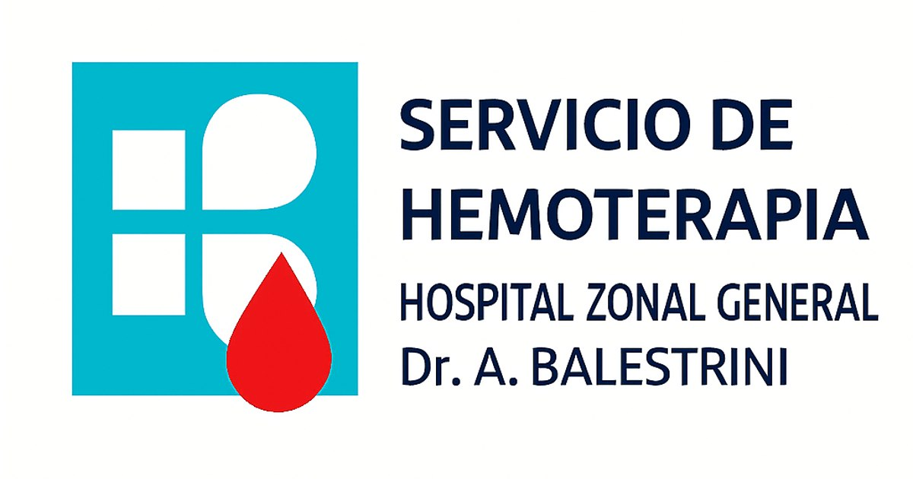

CONSULTA TÉCNICA HEMOTERAPIA
Referencia: NO-2025-30567861 (PBA)
Buscador de Criterios (Información Completa)
Calculador de Intervalos
Última donación:
Frecuencia:
Hombre (8 semanas)
Mujer (12 semanas)
Menor 16-18 años (6 meses)
CALCULAR FECHA